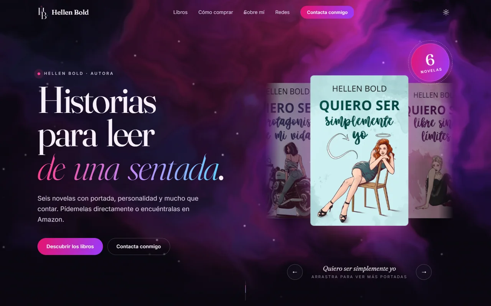
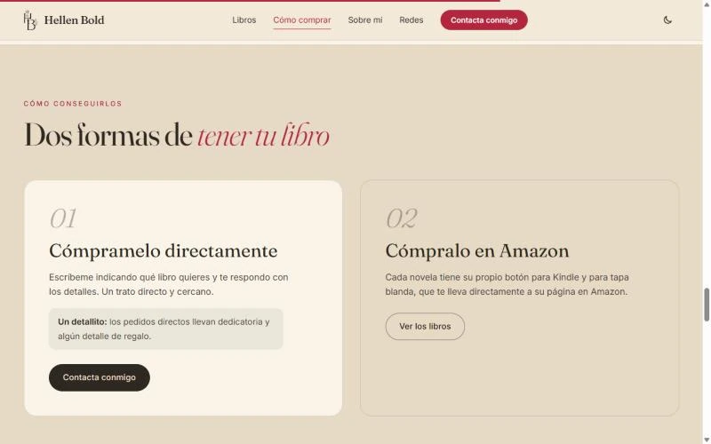

01 / 03
Soporte
Hardware, software y usuarios. Dejar los equipos funcionando y que nadie se quede parado.
- Soporte técnico
- Asistencia informática
- Gestión de incidencias
- Gestión de usuarios
Arreglo equipos, configuro redes y estudio cómo se rompen los sistemas para aprender a protegerlos.
Técnico informático con formación en sistemas microinformáticos y redes, ahora estudiando administración de redes y ciberseguridad.
Trabajo como auxiliar de TI en BandIT Solutions: soporte técnico, hardware y software, redes y conectividad, y gestión de usuarios. Antes diseñé páginas en WordPress y creé cursos online en Moodle. Constante, con ganas de aprender y de crecer en el sector.
Soporte técnico, redes y gestión de usuarios en empresa; webs y cursos online durante las prácticas.
BandIT Solutions Media jornada Atmella del Vallès
Soporte técnico a usuarios y equipos, gestión de hardware y software, redes y conectividad, y gestión de usuarios.
BandIT Solutions Prácticas Atmella del Vallès
Soporte técnico a usuarios y equipos, gestión de hardware y software, redes y conectividad, y gestión de usuarios.
Study Formación Professional Prácticas Granollers
Diseño y gestión de contenidos en WordPress, preparación y configuración de equipos informáticos, y creación y gestión de cursos online en Moodle.
Grado Superior en Administración de Sistemas Informáticos en Red. Cursando segundo año.
Grado Medio en Sistemas Microinformáticos y Redes.
Educación Secundaria Obligatoria.
Preparación de la certificación Cisco CCNA: fundamentos de redes, direccionamiento IP, switching, routing y seguridad básica.
Hardware, software y usuarios. Dejar los equipos funcionando y que nadie se quede parado.
Conectividad y configuración de redes, del armario rack al router.
Hacking ético, WebGoat, cortafuegos y alta disponibilidad con OPNsense.
Tu sueldo, con margen para respirar.
Una app web para llevar las cuentas del mes sin hojas de cálculo: apuntas lo que entra, los gastos fijos y lo que pasa por la tarjeta, y te dice cada día cuánto te queda de verdad. La estoy desarrollando yo y se lanzará pronto para todo el público.
Los datos se guardan en tu propio navegador. Incluye previsión del mes por categorías, objetivo de ahorro, gastos fijos mensuales o anuales, copia de seguridad, exportación a Excel, PDF y CSV, y modo claro y oscuro.
HTML · CSS · JavaScript

Lo que te queda este mes, nada más entrar.

Ingresos, fijos, gastos del día a día y dónde se va el dinero.

Se repiten solos cada mes y se marcan cuando se cobran.

Lo que crees que gastarás y cuánto te sobraría.
Web para una autora de novelas: catálogo de seis títulos agrupados por series y dos formas de conseguir cada libro. La estoy desarrollando yo.
También incluye secciones de autora, redes, newsletter y contacto, con tema claro y oscuro.



Un carrusel de portadas que se arrastra.
Seis novelas organizadas por series.
Pedido directo o Amazon (Kindle y tapa blanda).
HTML · CSS · JavaScript · GSAP · ScrollTrigger
Actividades de primero ya publicadas; las de segundo se van añadiendo. Ver ASIX →
Primer y segundo curso, más el proyecto final. Ver SMX →